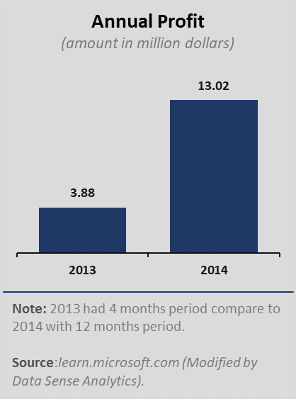
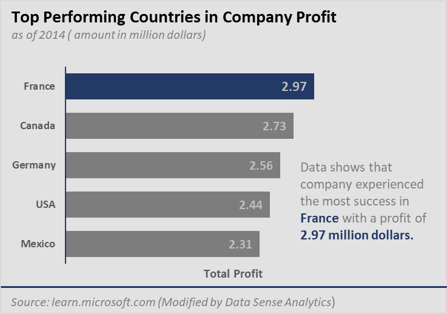
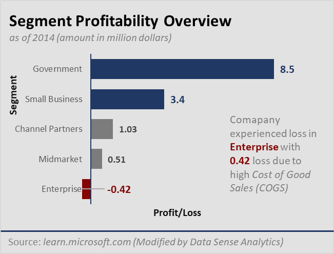
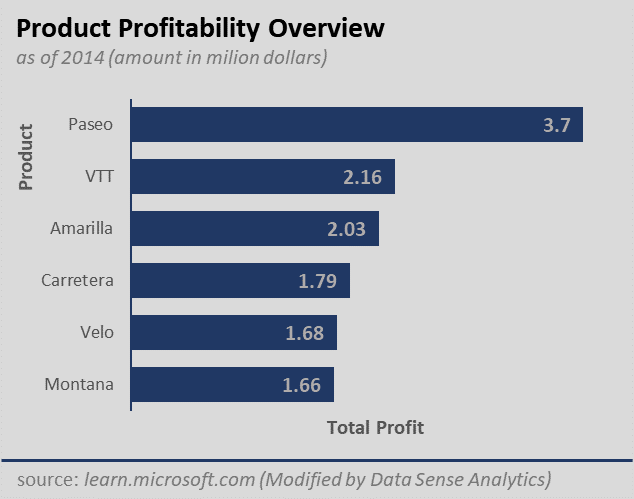

Executive Summary: Financial Performance
and Strategic Recommendations
and Strategic Recommendations
In an ever-evolving business landscape, understanding where your company's financial strengths lie and where to strategically allocate resources is paramount. This executive summary presents a succinct analysis of the key financial and strategic questions, shedding light on the most profitable period, the region of utmost success, and the products and segments that warrant further investment. By distilling complex data into actionable insights, this report aims to guide company's decision-making process, ensuring a more prosperous and competitive future.
* Determine which month and year had the most profit.
* Determine where is the company seeing the most success (by country or region).
* Determine which product and segment should the company continue to invest.

{kind=link}


{kind=link}

{kind=link}

{kind=link}
* In 2013, the company generated a profit of $3.88 million. This figure represents the financial performance for that specific year, indicating that after deducting all expenses. In the subsequent year, 2014, the company's financial performance showed significant improvement, with the profit of $13.02 million. This substantial increase in profit by nearly 9 times compared to the previous year.
* In December 2014, the company achieved its highest monthly profit with $2.03 million, possibly due to various factors like increase sales, holiday season effects or strategic decisions.
* France generated the highest profit of $2.97 million.
* The company should prioritize and continue to invest in Government and Small Business segments, as they are most profitable, with the Government Segment leading with a profit of $8.5 million and the Small Business segment contributing significantly with $3.4 million in profit, when it comes to product, Paseo has generated the highest profit, with a substantial $3.7 million.
Increase Focus on the French and German Markets: Since these markets have been the most successful in terms of profitability, the company could consider increasing their efforts in these countries. They could conduct market research to understand the consumer behavior, preferences, and trends in these countries to develop targeted marketing strategies.
Increase Production of Paseo: Since it is the most profitable product, the company could consider increasing its production to meet the demand for this product. This could involve increasing the capacity of their production facilities or investing in new technologies to optimize their production process.
Focus on the Government and Small Business Segment: Since the Government and Small Business are the most profitable for the company, they could consider developing new products or services that cater to the needs of this segment. This could involve collaborating with government agencies to understand their requirements and developing customized solutions.
Optimize Marketing and Sales Efforts During December: The company could leverage social media, email marketing and other channels to promote their products and services and offer incentives to customers to drive sales.
Evaluate and Learn from the Success in 2014: The company should evaluate what they did right in 2014 to make it the most profitable year and learn from those experiences. They could implement similar strategies or explore new opportunities that align with their strengths and capabilities to drive future growth.